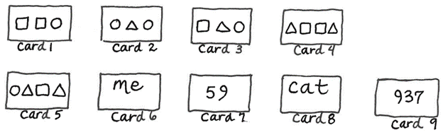

V 1: DOMINOES- SHAPES AND SIZES
Purpose:
To improve visual discrimination using shapes of many sizes.
Materials:
Twenty 3" x 6" cards of tagboard, magic marker and a ruler.
Divide the cards in half with a magic marker. Draw one shape in each half. Each shape should appear five
times and no two cards should be alike.
Procedure:
The dominoes are divided equally between the players. Each player should lay out their dominoes in front
of them, face down. The first player exposes one of their dominoes, placing it face up in the center of
the table. They turn up a second domino, and, if it has the same shape as either end of the dominoes
already touching the table, they place it on the table with the matching ends touching. They pick up a
third domino, and as many more as they can place, always trying to pick a domino that will match an
exposed half on the table. They continue to pick until they turn up a domino that does not match either
end. They put that domino back on the table, face down, along with their remaining dominoes. The next
player then plays. The first player to use up all their dominoes is the winner. If no one can make a
match, the player who has the least number of dominoes left in front of them is the winner.
V 2: SCAN FACES
Purpose:
To improve visual discrimination
Materials:
Using 24 3x3 tagboard squares, draw 2 sets of faces. (See
pattern on the following page.)
Both sets should be drawn by the same person, so they look alike.
Procedure:
Place one set face down in a pile. Spread the second set around in a circle, faces up. The child draws
the first card, scans the circle with their eyes looking for the matching face. When they make a match,
remove the card they just placed, so they always have a full choice of 12 faces to scan for each turn.
When it is your turn, have them help you do your scanning.
For beginners, you might want to start with fewer faces and work up to 12.
V 3: PICTO
Purpose:
To practice picture discrimination.
Materials:
Several game cards measuring 6" by 6" are divided into 2" by 2" squares.
Each square contains a picture cut from a magazine or old workbook. Some examples to use are a summer
scene, a small dog, a yellow flower, and a red car.
Lots of markers to cover the squares.
A master list with a description of each picture used on the game cards.
Procedure:
The child is given 2 game cards and all the markers so that they can play against themself.
Volunteer reads at random the descriptions from the list. Child finds and covers the picture that matches
the description.
The card that is covered wins.
V 4: ACTIVITIES FOR DEVELOPING VISUAL MEMORY
Put objects in sequence. Have the child look away and mix up objects. Then have the child put them in the
original sequence.
Show a picture to the child, take it away, then have them tell you about what they saw or draw a picture
of it.
Show the child a strip of paper with pictures pasted on it, let them study it, and then cover it. Have
the child recall pictures from left to right.
Use comic strips. Cut them apart and have the child put them in proper order.
Have the child tell you about different things they saw at the: supermarket, school, playground, zoo,
movie, classroom, kitchen, their bedroom, etc.
Write down a series of numbers, letters, or shapes, show them to the child, then have them write down
what they saw in proper order.
Show the child a sheet of paper with their phone number and street address. Ask them to memorize and
write it down.
Use dot to dot coloring books.
Have the child watch you doing something (moving around, picking up things, setting them down, etc.) Then
ask them to recall the series of events in order.
Have a variety of objects on the table. Remove one, ask the child what is missing.
Arrange bead patterns on a string for 10 seconds. Remove the beads and ask the child to put them back on
in the right sequence.
V 5: COPY MEMORY PACK
Purpose:
To develop visual memory
Materials:
Using small blank index cards, draw the following patterns.
Procedure:
Have the child look at the card and name what they see. Hide the card and have them copy what they saw on
squared paper.
This helps the child learn to copy from the blackboard.

V 6: DIC DAC DOE
Purpose:
To practice similar letters or words that can be confused.
b/d; g/q; p/9; m/w; u/n; v/y.
Materials:
Squared paper, pencils, and scissors.
Manila folder with "tic tac toe" squares drawn on it.
Procedure:
Make a line of each letter to be practiced. Underline each square to indicate up and down position. Cut
out each individual letter.
Play tic tac toe.
V 7: WEEKDAYS
Purpose:
To learn the days of the week
Materials:
Tagboard cards 5 of each weekday
3 wild cards
Make the five cards for Monday decorated alike. Write the names on top.
Procedure:
Shuffle the cards. Deal out 5 cards to each player. Place the rest face down in the center of the table,
turning the top one over. The first player puts a card from their hand on top of the discard pile if it
follows in sequence. (If the card turned over is Tuesday, then the first player must play a card with
Wednesday on it). If the child does not have the right card, they must lose a turn and draw one card
from the turned down pile in the center. Next player continues. The first player to use all their cards
is the winner.
Variation:
With different cards, the game could be used to learn months of the year.
V 8: TOUCH THE SHAPE
Purpose:
To develop an awareness of body parts (visual discrimination of shapes).
Materials:
A variety of colored shapes, colors, letters, or numbers are placed on the floor.
Procedure:
Child stands on X and the tutor asks them to: "place your right hand on a square, place left foot on a
circle, place right ear on a rectangle, place chin on an oval, etc."
Variation:
If this is too difficult, omit right hand and left in the beginning or give the child something to hold
in their right hand as a "helper".
V 9: B AND D CONFUSION
Try:
"C" (make the c) comes before "d" and then make the d by making the c and adding the long line to make
the letter d.
V 10: EYE MOVEMENT CHART
Purpose:
To practice directionality and visual discrimination.
Materials:
Eye Movement Chart (made on squared paper)
Procedure:
Ask the child to read each letter they see, going from left to right as fast as they can without moving
their head. Time them and see if they can decrease their time. Watch that they do not skip from one line
to another or lose their place.
L h b C A
H d g J a
D j q f G
T u r c K
d v m B n
E o P I Q
Y z W F i
e b S R X
V 11: HAVE A HEART
Purpose:
To improve visual discrimination through matching heart shapes, numbers, and letters
Materials:
Gameboard with 16 boxes, with the top two rows numbered 1-8, and a different style of heart in each one;
the bottom two rows containing the same eight hearts, but lettered A-H. A bag containing cards marked
with a number 1-8, and cards marked with a letter, A-H.
Procedure:
First, have the child place the number and letter cards on the corresponding spaces on the game board, so
that all the hearts are covered. Next, take turns turning over one letter card and one number card. If
the hearts match, the player may keep the pair of cover cards and take another turn. Play continues
until all the hearts are uncovered. The winner is the one with the most cards at the end of the game.
Note: If the child finds it difficult to match the letters and numbers, the tutor can set up the board
before play begins.
Visual Discrimination and Writing bin also includes:
Story starter prompts journals.
Pencil grips (for use if student struggles to hold pencil correctly).
Shape and learn letter sounds.
Sequencing Cards.